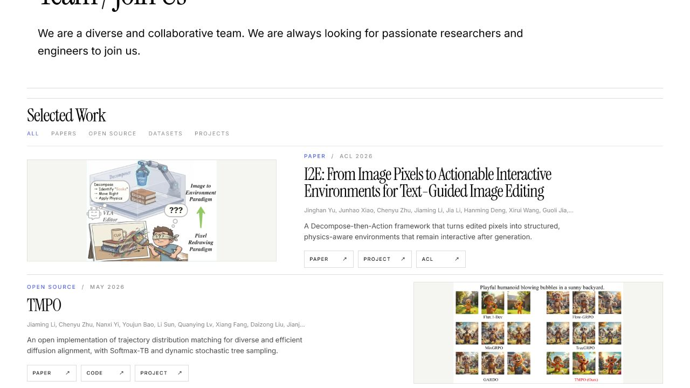
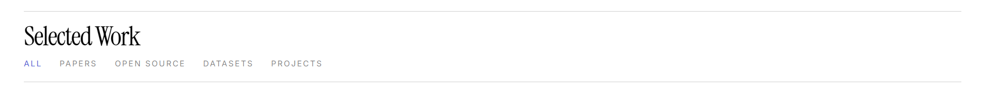
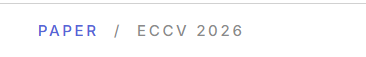
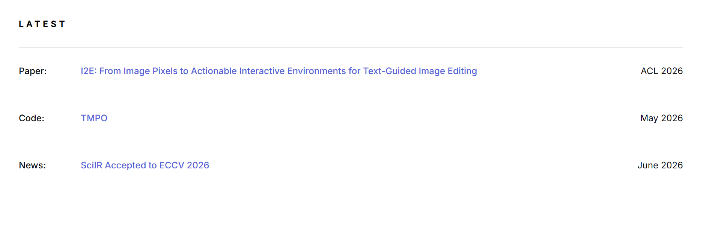
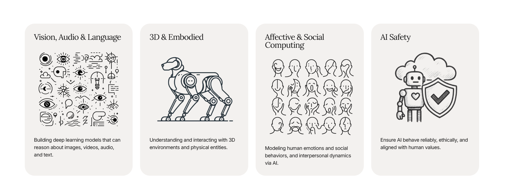

MAIR Lab Homepage Structure
Reduce the page to three primary editorial sections—Research, Publications, and Join Us—while keeping News as a compact utility list.
Open the hosted Lazyweb report
Current State

Implemented Improvements
One Publications section
Selected Work and its category strip are removed. Only publication records remain, ordered newest first.

Metadata badge
Each paper now carries one compact venue/type badge directly below its title.

Lab News
The compact Latest list becomes a reverse-chronological News list.

Research direction cards
Four rounded visual cards explain the lab’s research directions in plain language.
